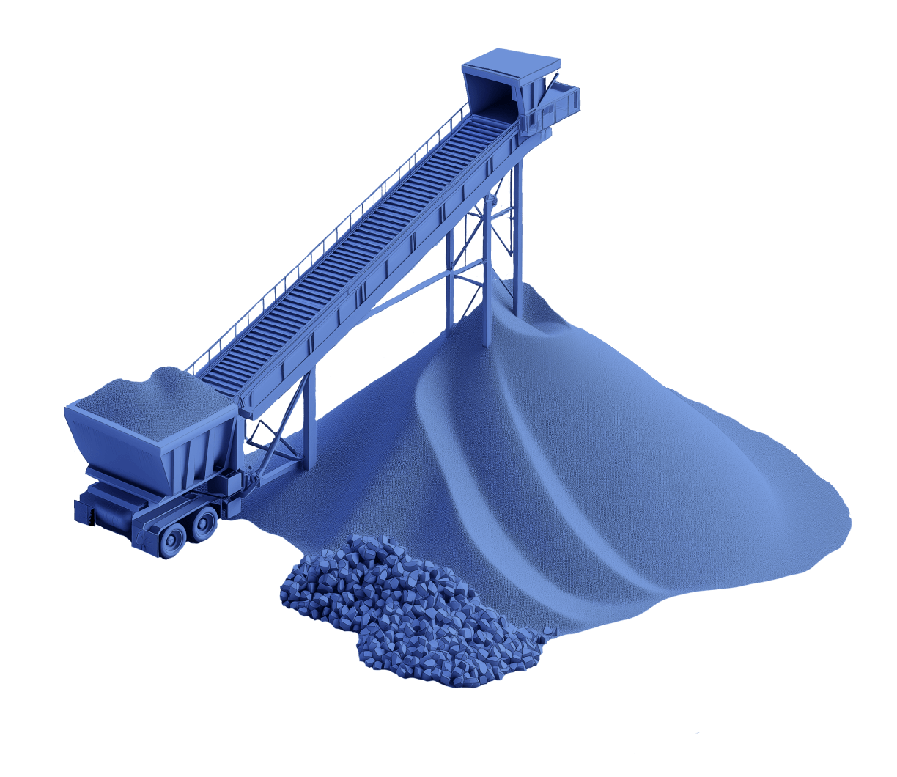

Miljoen m3 gewonnen
Zand en klei worden nog vaak primair gewonnen, terwijl vergelijkbare stromen al in baggerspecie aanwezig zijn.
Services
Services
Van eerste scan tot toepassing: Blauwe Bagger brengt analyse, mobiele verwerking en materiaaladvies samen in een praktische route voor circulaire baggerprojecten.
Het probleem
Zand en klei worden nog vaak primair gewonnen, terwijl vergelijkbare stromen al in baggerspecie aanwezig zijn.
Zonder vroege verwerking worden waardevolle fracties minder goed herbruikbaar en blijft logistiek onnodig zwaar.
De verwerkingsketen
De containerunit dikt in, zeeft, scheidt en verwerkt baggerspecie zonder lange omwegen. Elke stap heeft een eigen meetpunt, zodat het resultaat voorspelbaar en toepasbaar wordt.

Stap 01
Waterige bagger wordt ingedikt voordat transport of verdere scheiding nodig is.
Werkpakket
01
Vooraf inzicht in baggerstroom, logistieke randvoorwaarden en gewenste uitkomst.
02
Een containeropstelling die dichtbij de bron kan worden geplaatst en snel kan opschalen.
03
Van grove delen tot fijne fracties: elke stap ondersteunt een heldere vervolgrichting.
04
De stap van materiaal naar gebruik, zodat een stroom niet in het project blijft hangen.
Volgende stap
Vanuit services kun je door naar producten of meteen een projectvraag voorleggen. De site heeft nu per onderwerp een eigen route, zodat bezoekers sneller landen waar ze moeten zijn.
Ga naar contact